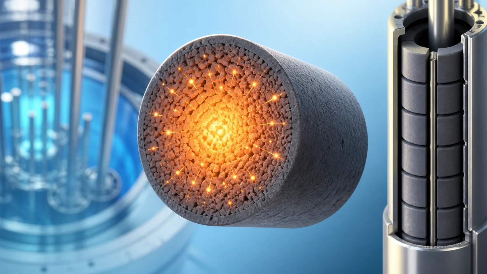
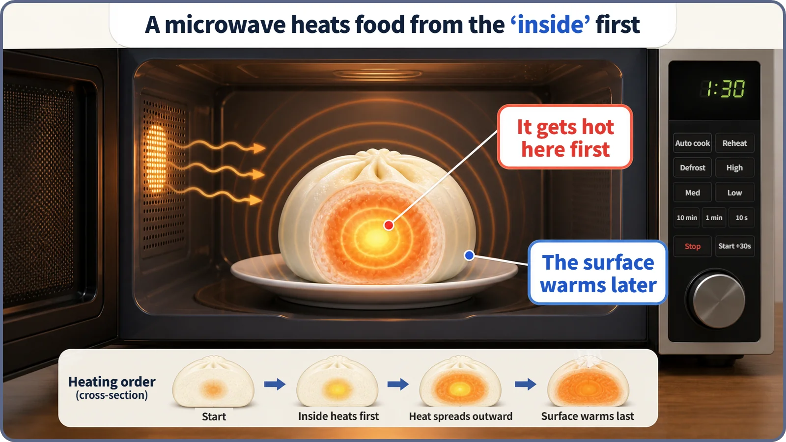
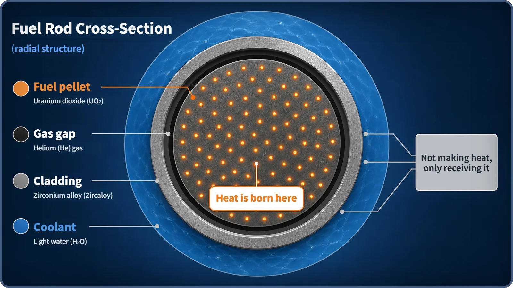

Heat Transfer & Thermal Hydraulics · 126
More Microwave Than Oven — Where Fission Heat Is Born
Like food in a microwave, nuclear fuel heats itself from within: most of the 200 MeV from each fission becomes heat on the spot, inside the pellet.

About 200 MeV is released in each fission, and roughly 80% or more of it is the kinetic energy of the two fission fragments. Because the fragments are heavy and charged, they stop within a few micrometers, so that energy becomes heat right where fission happened: inside the fuel pellet. Fuel heats itself from within, much like food in a microwave, rather than being warmed from outside like a roast in an oven.
Where does reactor heat first appear?
So far we have followed how reactor power moves over time and why a reactor tends to pull itself back toward balance. Now it's time for a different question: where, exactly, does that "heat" first appear, and how? This is the start of a journey that follows heat from its birth inside a reactor all the way out to the coolant, the subject engineers call heat transfer and thermal hydraulics. The first step is simple to ask: where is the heat born first?
Roasting in an oven vs. 30 seconds in the microwave
Picture a roast going into an oven. The heating element gets hot, it warms the air, and the warm air touches the outside of the meat and cooks the surface first. That heat then creeps slowly from the surface toward the center until the inside is done. That's why an oven roast can be beautifully browned outside and still underdone in the middle: the heat moves in order, from the outside in.
A microwave works in a completely different way. Microwaves don't stop at the surface; they penetrate into the food and directly shake the water molecules inside it. As those molecules jiggle, they generate heat themselves. In other words, in a microwave the heat source isn't outside the food at all. The food itself becomes the heat source, which is why the surface and the inside warm up at nearly the same time.

Here's the difference in one sentence: in an oven, heat comes in from outside; in a microwave, heat is born inside. So which one is nuclear fuel more like?
Nuclear fuel is the microwave, not the oven
The answer first: nuclear fuel is much closer to the microwave. To see why, let's zoom in on the moment fission actually happens.
When a fissile nucleus such as uranium-235 absorbs a neutron, it splits into two pieces, called fission fragments, and releases an enormous amount of energy. One fission releases roughly 200 MeV (MeV, or mega-electronvolt, is the energy unit used at the scale of atomic nuclei). By far the largest share of that, roughly 80% or more, shows up as the kinetic energy of the two fragments flying apart in opposite directions.
Here's the key question. How far do those fragments travel? Do they fly a long way, leave the fuel, and only then give up their energy? No. A fission fragment is a heavy, strongly charged chunk of a nucleus, so it crashes nonstop into the atoms and electrons of the fuel around it and loses its kinetic energy almost instantly. As a result, a fragment travels only a few micrometers (one micrometer is a thousandth of a millimeter).
To get a feel for that, compare it with the fuel. A fuel pellet, the small cylinder of compressed nuclear fuel loaded into a reactor, is usually about 1 cm across. The distance a fragment flies is less than a few-thousandths of that diameter. So a fragment stops practically where it was born, barely a step away, and turns all of its kinetic energy into heat right there. The heat doesn't come in from outside the fuel; it is born almost simultaneously throughout the fuel material itself, just like food in a microwave.
Following the 200 MeV
The whole story fits in one short relation:
Thermal power (P) ≈ fissions per second (Ṅf) × energy per fission (Ef ≈ 200 MeV)
The energy per fission, Ef, doesn't come out as a single lump; it is split into several shares. Roughly 80% or more is the kinetic energy of the two fragments. Of the rest, part leaves as gamma rays and neutrons released at the instant of fission, and part is released gradually later as the fission fragments undergo radioactive decay.
The one point this post wants to stress is this: the vast majority of those 200 MeV appears as heat at the very moment of fission, at the very spot it happens, inside the fuel material. For completeness, the shares carried by gamma rays and neutrons are more penetrating, so they can leave the fuel and deposit their energy in the moderator, coolant or structures. There is also decay heat from the fission products, heat that comes out gradually over time rather than right at the moment of fission. But the answer to today's question, "where is heat born first, and where is most of it born?", is clear: inside the fuel pellet.

Neighboring ideas that are easy to mix up
Where heat is born (this post) vs. the power distribution across the core. This post is about a single fuel pellet: heat is born inside it, not at its surface. Which fuel rods and which locations in the core produce relatively more heat (the power distribution that follows the neutron flux distribution) is a separate topic with a completely different focus.
Prompt fission heat (this post) vs. decay heat. This post deals with heat that appears at the moment of fission. The heat released gradually afterward as fission products decay, often called "decay heat" or "residual heat", remains for a while even after the reactor shuts down and is treated separately as an important safety topic. It isn't covered here.
Where heat is born (this post) vs. the path heat travels. This post stops at "where heat is born." How that heat flows out from inside the fuel through the gap and the cladding to the coolant (conduction and convection) is the story still to come.
Two common misconceptions
Misconception 1: "Fission heat is produced as the coolant heats up." No. The coolant is heated by receiving heat from the fuel; it isn't a main heat source of its own. (Gamma rays and similar radiation can cause a very small additional heating in the coolant and surrounding structures, but the main source of reactor heat is the fuel.)
Misconception 2: "Most fission energy escapes instantly as light (gamma rays) or neutrons." No. As we saw, the vast majority is the kinetic energy of the two fission fragments; the share carried off by gamma rays and neutrons is relatively small.
Today in one breath
- The vast majority of fission energy (about 200 MeV per fission) appears as the kinetic energy of the two fission fragments.
- Because the fragments are heavy and charged, they travel only a few micrometers in the fuel before stopping, turning their kinetic energy into heat right there.
- So fission heat doesn't come in from outside the fuel; it is born almost simultaneously throughout the inside of the fuel pellet. More microwave than oven.
- Because of this, a fuel pellet always has a temperature distribution in which the center is hotter than the surface, and managing that center temperature is a core task of reactor thermal design.
- Where heat is born (this post) and how that heat is carried away (the story ahead) are two different questions.
Now that we know fission heat is born inside the fuel, the next question follows naturally: why is the fuel hottest at its center and cooler toward its surface, and what sets that temperature difference? That's where we'll go next.